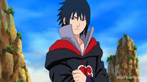
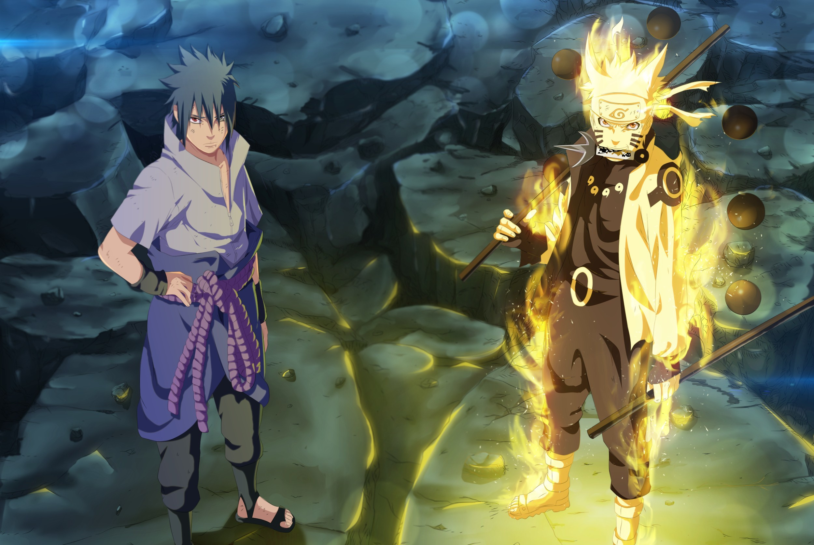

Turning Point
Overview
Pain Arc

The Pain Arc marks a turning point in Naruto Shippuden, where Naruto returns to the Hidden Leaf to face Pain, the leader of the Akatsuki. After witnessing the destruction of the village and the death of his mentor Jiraiya, Naruto confronts Pain in a battle that tests his ideals and strength. Ultimately, Naruto triumphs not only through power but by understanding Pain’s trauma and convincing him to seek peace, solidifying his role as the village’s hero.
Sasuke’s path of vengeance
Following the the pain arc, the story delves deeper into Sasuke’s path of vengeance and the growing threat of the Akatsuki. The Five Kage Summit is held in response to Akatsuki's actions, where Sasuke clashes with several Kage. This leads to the declaration of the Fourth Great Ninja War by Obito Uchiha (posing as Madara), aiming to capture all Tailed Beasts and cast the Infinite Tsukuyomi—a genjutsu to trap the world in an illusion.
War Erupts
As the war erupts, Naruto trains to control the Nine-Tails’ chakra and gains immense power. On the battlefield, countless ninja fight against reanimated legends and the Ten-Tails. The true Madara Uchiha returns and unleashes chaos, eventually leading to the revival of Kaguya Ōtsutsuki, the original wielder of chakra. Naruto and Sasuke, chosen by the Sage of Six Paths, gain new powers to stop her.
The arc concludes with an emotional and intense final battle between Naruto and Sasuke at the Valley of the End. After clashing ideologies and fists, they reconcile, ending the cycle of hatred. The war ends with Naruto hailed as a savior—his dream of peace and unity finally within reach.